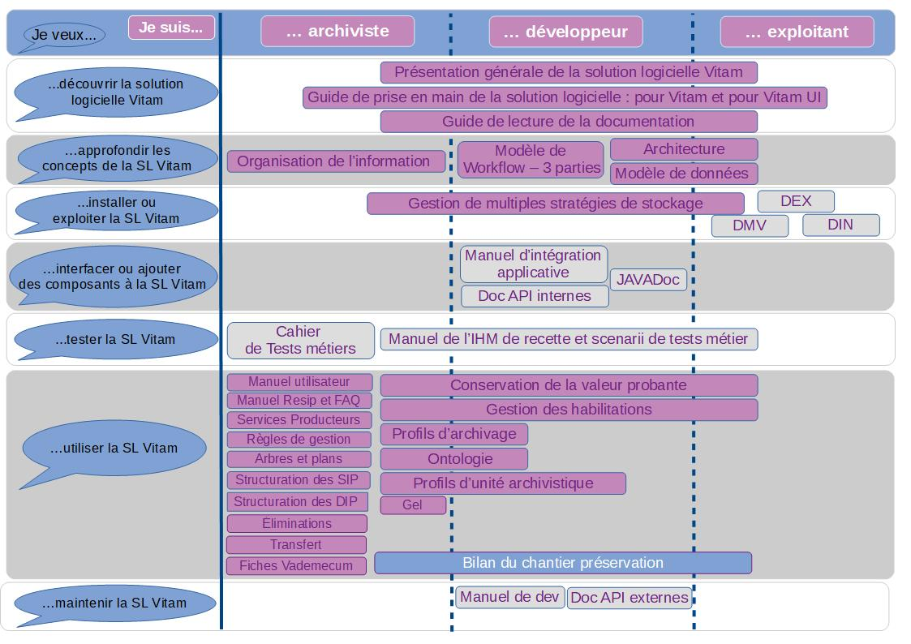

1. Documentation Vitam - guide de lecture
1.1. Présentation du document
Le présent document constitue un guide permettant de s’orienter au sein de la documentation produite par le Programme Vitam. Il s’articule autour des axes suivants :
qui sont les utilisateurs ? : archivistes, informaticiens (développeurs, architectes)
quel est leur besoin ? : découvrir, tester, installer, utiliser, interfacer le logiciel…
quel document leur apportera l’information qu’ils recherchent ?
Le document comporte une carte apportant une vision globale croisant ces trois axes (utilisateur/besoin/documentation) et une fiche signalétique de chaque document produit par le Programme Vitam, comportant sa description, le public ciblé, le lien pour consulter le document et une extraction du sommaire. Il est conseillé de consulter les documents du général au particulier, dans l’ordre de la démarche présentée par le schéma suivant. Par exemple, pour un développeur, il est conseillé de consulter le document d’architecture avant le manuel d’intégration.
1.2. Lire la documentation : à chaque besoin, sa documentation…
1.2.1. La documentation générale

1.2.2. La documentation Vitam UI
En plus des documents pour les développeurs et intégrateurs et des présentations des différentes APP (pour application) métier, deux documents font le point sur des sujets techniques :
authentification, administration et habilitation des utilisateurs et cloisonnement des données.
Un guide de prise en main de Vitam UI pour premier versement a également été initié.
Ordre d’exécution |
Je souhaite ? |
APP VITAM UI |
Rôle |
Documentation |
|---|---|---|---|---|
1.1 (Obligatoire) |
Créer une nouvelle organisation et lui associer 1 ou plusieurs coffre(s) |
Organisation |
Administrateur du service (si vous exposez VITAM UI en tant que service pour d’autres utilisateurs) |
VitamUI_DocAPP_Organisation |
1.2 (Obligatoire) |
Créer le compte nominatif de l’administrateur fonctionnel d’une organisation à des fins d’activation |
Prendre la main sur la session d’un utilisateur à des fins de support |
Subrogation |
VitamUI_DocAPP_Subrogation |
1.3 (Facultatif) |
Définir des droits fins sur la gestion des utilisateurs de mon organisation en créant un nouveau profil de droits(*) pour cette APP |
Profil APP Utilisateurs |
Administrateur fonctionnel VITAM UI |
VitamUI_DocAPP_Profil_APP_Utilisateur |
1.4 (Obligatoire sauf si le groupe existe déjà) |
Définir des regroupements de droits sur une ou plusieurs APPs du portail pour mes utilisateurs Groupes de profils Administrateur fonctionnel |
VITAM UI VitamUI_DocAPP_Groupe_profil |
||
1.5 (Obligatoire) |
Créer mes utilisateurs et leur attribuer des droits |
Utilisateur |
Administrateur fonctionnel VITAM UI |
VitamUI_DocAPP_Utilisateur |
NA |
Paramétrer des profils de droits permettant d’associer un contrat d’accès à un utilisateur |
Profil APP Paramétrages externes |
Administrateur fonctionnel VITAM UI |
VitamUI_DocAPP_Profil_APP_Parametrages_externes |
NA |
Créer de nouveaux profils de niveaux inférieurs, limiter l’attribution de profils à une portée d’utilisateurs et adapter la séparation des rôles |
Hiérarchisation des profils |
Opérateur d’instance |
VitamUI_DocAPP_Hierarchisation_profils |
2.1 (Obligatoire) |
Déclarer un nouveau service producteur ou un nouveau service versant Services agent |
Administrateur fonctionnel VITAM UI |
VitamUI_DocAPP_Services_agents |
|
2.2 (Obligatoire) |
Déclarer des nouvelles règles de gestion |
Règles de gestion |
Administrateur fonctionnel VITAM UI |
VitamUI_DocAPP_Regles_gestion |
2.3 (Facultatif) |
Créer et modifier un profil d’archivage (PA) ou un profil d’unité archivistique (PUA), créer et modifier une notice d’un profil, importer et exporter un profil d’archivage |
Profils documentaires |
Administrateur fonctionnel VITAM UI |
VitamUI_DocAPP_Profils_documentaires.pdf |
2.4 (Facultatif) |
Déclarer un nouveau format non présent dans le référentiel PRONOM |
Formats de fichiers |
Administrateur technique VITAM UI |
VitamUI_DocAPP_Formats_fichiers |
2.5 (Facultatif) |
Déclarer un nouveau vocabulaire non présent dans l’ontologie SEDA |
Ontologie |
Administrateur technique VITAM UI |
VitamUI_DocAPP_Ontologie |
2.6 (Facultatif) |
Importer un arbre de positionnement ou un plan de classement |
Arbres et plans |
Administrateur fonctionnel VITAM UI |
VitamUI_DocAPP_Arbres_plans |
2.7 (Facultatif) |
Rechercher et consulter un contrat de gestion, le créer et le mettre à jour |
Contrat de gestion |
Administrateur fonctionnel VITAM UI |
VitamUI_DocAPP_Contrat_gestion |
3.1 (Obligatoire sauf si le contrat est inchangé) |
Paramétrer des droits pour le versement d’archives dans un coffre par une application |
Contrat d’entrée |
Administrateur fonctionnel VITAM UI |
VitamUI_DocAPP_Contrat_entree |
3.2 (Obligatoire sauf si le contrat est inchangé) |
Paramétrer des droits pour la consultation ou mise à jour d’archives dans un coffre par une application |
Contrat d’accès |
Administrateur fonctionnel VITAM UI |
VitamUI_DocAPP_Contrat_acces |
3.3 (Obligatoire sauf si le profil est inchangé) |
Définir les droits d’une application sur les services VITAM |
Profil de sécurité |
Administrateur technique VITAM UI |
VitamUI_DocAPP_Profil_securité |
3.4 (Obligatoire sauf si le contexte est inchangé) |
Authentifier une application interconnectée avec VITAM et lui attribuer des droits |
Contexte applicatif |
Administrateur technique VITAM UI |
VitamUI_DocAPP_Contexte_applicatif |
NA |
Consulter le journal des opérations VITAM (entrées, éliminations et données de base) |
Journal des opérations |
Administrateur fonctionnel VITAM UI |
VitamUI_DocAPP_Journal_operations |
NA |
Visualiser les opérations de sécurisation et accéder aux journaux du cycle de vie des objets |
Opération de sécurisations |
Administrateur technique VITAM UI |
VitamUI_DocAPP_Operations_securisation |
NA |
Effectuer des requêtes complexes sur les bases de données documentaires en vue de retrouver des objets |
Requêtes DSL |
Administrateur technique VITAM UI |
VitamUI_DocAPP_RequetesDSL |
NA |
Vérifier la conformité de la conservation de mes archives |
Audits |
Administrateur fonctionnel VITAM UI |
VitamUI_DocAPP_Audits |
NA |
Produire un relevé de valeur probante sur une ou plusieurs de mes archives électroniques |
Relevé de valeur probante |
Administrateur fonctionnel VITAM UI |
VitamUI_DocAPP_Releve_valeur_probante |
NA |
Gérer des opérations et interagir sur les étapes du workflow des opérations |
Gestion des opérations |
Administrateur technique VITAM UI |
VitamUI_DocAPP_Gestion_operations |
NA |
Créer un projet de versement, consulter et rechercher les unités archivistiques liées à un versement, ajouter des métadonnées descriptives et de gestion des unités archivistiques, consulter, valider, transférer les versements liés à un projet |
Collecte et préparation des versements |
Archiviste / service versant |
VitamUI_DocAPP_Collecte_et_préparation_des_versements.pdf |
NA |
Déposer un lot d’archives dans le SAE et en visualiser l’entrée |
Dépôt et suivi des versements |
Archiviste |
VitamUI_DocAPP_Depot_suivi_versements |
NA |
Rechercher et télécharger des unités archivistiques contenues dans le SAE |
Recherche et consultation des archives |
Archiviste |
VitamUI_DocAPP_Recherche_consultation |
NA |
Consulter le registre des fonds et rechercher dans le registre des fonds |
Registre des fonds |
Administrateur fonctionnel VITAM UI |
VitamUI_DocAPP_Registre_des_fonds |
1.3. Découvrir la solution logicielle Vitam
1.3.1. Présentation du projet solution logicielle
Présentation : ce document présente de manière assez générale la solution logicielle : mode de développement, vision générale fonctionnelle et technique de la solution.
Lien vers le document : Présentation de la solution logicielle
Public cible : toute personne voulant découvrir la solution logicielle Vitam, tant profil technique que fonctionnel.
Sommaire :
Solution logicielle Vitam : Manifeste, Une logique back-office… à l’écoute des besoins métiers et techniques, Planning, Contenu des versions, Normes et textes pris en compte, Sécurité, Maintenance
Vision fonctionnelle : « Story Map » : Principe d’élaboration et Contenu, Interfaces Homme Machine
Vision technique : Architecture générale, Modules du Cœur Vitam, Moteur de traitement, Moteur de données, Gestion des journaux, Gestion des offres de stockage, Principes d’organisation des archives
1.3.2. Guide de prise en main de la solution logicielle Vitam (1er transfert)
Présentation : ce document décrit comment effectuer une première entrée dans la solution logicielle Vitam avec l’IHM Vitam UI. Il explicite les étapes obligatoires de paramétrage et de préparation des lots d’archives. Un lexique en annexe explicite et détaille les principaux objets métiers avec une description, un statut (obligatoire ou facultatif) pour l’opération d’entrée et renvoie vers la documentation permettant d’approfondir cette notion.
Le document est accompagné d’un « kit » comportant les fichiers d’exemple utiles (référentiels, SIP).
Lien vers le document : Guide de prise en main
Public cible : toute personne voulant découvrir et tester la solution logicielle Vitam.
Sommaire :
Introduction
Avertissements
Présentation du portail Vitam UI
Processus
1.4. Comprendre et approfondir les concepts Vitam
1.4.1. Organisation de l’information
Présentation : Le document présente l’organisation fonctionnelle de l’information (données et métadonnées) retenue pour la solution logicielle Vitam.
Il s’articule autour de trois grands axes :
les exigences fonctionnelles impactant l’organisation de l’information ;
la manière dont la solution logicielle Vitam adapte les spécifications de la norme OAIS pour répondre aux exigences fonctionnelles identifiées précédemment, notamment dans la conception de ce que la norme OAIS désigne sous l’expression d’Archival Information Packages (AIP) ;
l’organisation de l’information dans la solution logicielle Vitam en tant que telle.
Il doit permettre à tout projet d’implémentation de la solution logicielle Vitam d’alimenter le dossier de description technique du système tel qu’exigé par les normes NF Z 42‑013 et NF Z 42‑020. Il contextualise le modèle de données fourni comme documentation de la solution logicielle.
Lien vers le document : Organisation de l’information
Public cible : archivistes
Sommaire :
Exigences : transverses ; associées aux différentes étapes du cycle de vie des objets archivés
Implémentation de la norme OAIS dans la solution logicielle Vitam
Les paquets transférés au système d’archivage : les Submission Information Packages (SIP)
Les paquets gérés par le système d’archivage : les Archival Information Packages (AIP)
Les paquets transmis par le système d’archivage : les Dissemination Information Packages (DIP)
Structuration proposée :
Données de référence
Objets permettant la gestion des droits
Stratégies liées à la gestion
Modèles et structuration des objets métiers
Descriptions
Journaux et registres
1.4.2. Modèle de données
Présentation : Le document présente l’organisation technique des données et métadonnées au sein de la solution logicielle Vitam.
Il a pour objectif de présenter la structure générale des collections utilisées dans la solution logicielle Vitam. Il est destiné principalement aux développeurs, ainsi qu’à tous les autres acteurs du programme, pour leur permettre de connaître ce qui existe en l’état actuel.
Il explicite chaque champ, précise la relation avec les sources (manifeste conforme au standard SEDA v.2.1 ou référentiels externes tels que Pronom et internes tels que le référentiel des règles de gestion) et la structuration JSON stockée dans MongoDB.
Pour chacun des champs, cette documentation apporte :
Une liste des valeurs licites ;
La sémantique ou syntaxe du champ ;
Sa codification en JSON.
Il décrit aussi parfois une utilisation particulière faite à une itération donnée.
Lien vers le document : Modèle de données
Public cible : développeurs
Sommaire :
Base Identity
Base Logbook
Base MetaData
Base MasterData
Base Report
1.4.3. Modèle de Workflow
Présentation : Ce document présente les différents processus employés par la solution logicielle Vitam. Il explicite chaque processus (appelés également “workflow”), et pour chacun d’eux, leurs tâches et traitements. Ce document comprend également du matériel additionnel pour faciliter la compréhension des processus comme des fiches récapitulatives et des schémas. Il explique également la manière dont est formée la structure des fichiers de workflow.
Un workflow est un processus composé d’étapes (macro-workflow), elles-mêmes composées d’une liste d’actions à exécuter de manière séquentielle, une seule fois ou répétées sur une liste d’éléments (micro-workflow).
Pour chacun de ces éléments, le document décrit :
La règle générale qui s’applique à cet élément ;
Les statuts de sortie possibles (OK, KO…), avec les raisons de ces sorties et les clés associées ;
Des informations complémentaires, selon le type d’élément traité. Chaque étape, chaque action peuvent avoir les statuts suivants :
OK : le traitement associé s’est passé correctement. Le workflow continue.
Warning : le traitement associé a généré un avertissement. Le workflow continue.
KO : le traitement associé a généré une erreur métier. Le workflow s’arrête si le modèle d’exécution est bloquant.
FATAL : le traitement associé a généré une erreur technique. Le workflow s’arrête. Chaque action peut avoir les modèles d’exécution suivants (toutes les étapes sont par défaut bloquantes) :
Bloquant : Si une action est identifiée en erreur, l’étape en cours est alors arrêtée et le workflow passe à un nouvel état.
Non bloquant : Si une action est identifiée en erreur, le reste des actions de l’étape est exécuté avant que le statut de l’étape passe à « erreur ». Le workflow passe alors à un nouvel état.
Lien vers le document : Modèle de Workflow
Public cible : administrateurs aussi bien techniques que fonctionnels, archivistes souhaitant une connaissance plus avancée du logiciel, développeurs.
Sommaire :
Audit
Export d’un DIP (Dissemination Information Package)
Ingest
MasterData
Traceability
Mise à jour unitaire (Update)
Mise à jour de masse (Mass Update)
Élimination
Modification d’arborescences (Reclassification)
Préservation
Transfert
Nettoyage d’entrées en erreur
Workflow de suppression d’objets
1.4.4. Dossier d’architecture technique (DAT)
Présentation : Le document présente une vision d’ensemble des problématiques structurantes de la solution logicielle Vitam (d’un point de vue applicatif et technique). Il explicite également les choix structurants de principes et composants de réalisation de la solution logicielle, ainsi que les raisons de ces choix.
Lien vers le document : Documentation d’architecture
Public cible : architectes applicatifs et techniques de projets désirant intégrer la solution logicielle Vitam, développeurs, exploitants
Sommaire :
Rappels
Vue d’ensemble
Architecture applicative
Architecture technique / exploitation
Sécurité
Architecture détaillée
1.5. Installer et gérer la solution logicielle
1.5.1. Documentation d’installation (DIN)
Présentation : Le document a pour but de fournir à une équipe d’exploitants de la solution logicielle Vitam les procédures et informations nécessaires pour l’installation de celle-ci.
Lien vers le document : Documentation d’installation
Public cible : informaticiens, exploitants ayant de bonnes connaissances en environnement Linux.
Sommaire :
Rappels
Pré-requis à l’installation
Procédure d’installation / mise à jour
Procédure de mise à jour de la configuration
Post installation
Montée de version
1.5.2. Documentation d’exploitation (DEX)
Présentation : Le document a pour but de fournir à une équipe d’exploitants de la solution logicielle Vitam les procédures et informations nécessaires au bon fonctionnement de celle-ci.
Lien vers le document : Documentation d’exploitation
Public cible : informaticiens, exploitants ayant de bonnes connaissances en environnement Linux.
Sommaire :
Rappels
Expertises requises
Architecture de la solution logicielle Vitam
Exploitation globale
Suivi de l’état du système
Exploitation des COTS de la solution logicielle Vitam
Exploitation des composants de la solution logicielle Vitam
Intégration d’une application externe dans Vitam
Aide à l’exploitation
Questions fréquemment posées
1.5.3. Documentation de montées de version (DMV)
Présentation : Le document a pour but de fournir à une équipe d’exploitants de la solution logicielle Vitam les procédures et informations utiles pour réaliser les montées de version de la solution logicielle. Il décrit les chemins de montées de versions supportés.
Lien vers le document : Documentation de montées de version
Public cible :
Les architectes techniques des projets désirant intégrer la solution logicielle Vitam ;
Les exploitants devant installer la solution logicielle Vitam.
Sommaire :
Rappels
Généralités sur les versions
Montées de version
1.6. Interfacer et ajouter des composants à la solution logicielle Vitam
1.6.1. Manuel d’intégration applicative
Présentation : Le document présente comment interfacer la solution logicielle Vitam avec une application métier : comment développer un connecteur Vitam, et instaurer un dialogue entre l’application et la solution logicielle Vitam, développer des plugin…
Lien vers le document : Manuel d’intégration applicative
Public cible : développeurs
Sommaire :
Vitam
API
Exemples
DSL Java Vitam
Utilisation des clients externes
1.6.2. JAVADOC
Présentation : Le document présente la documentation interne du code de la solution logicielle Vitam, notamment la documentation associée aux clients java externes de celle-ci. Ces éléments de code peuvent être utilisés pour associer une application à la solution logicielle Vitam.
Lien vers le document : Javadoc
Public cible : développeurs, mainteneurs de la solution logicielle Vitam
Ihm Demo
Ihm Recette
Ingest External Client
Ingest module
Access External Client
Acces module
Common module
Functional administration module
Logbook module
Metadata module
Processing module
Storage Driver / Offer modules
Storage Engine module
Worker module
Workspace module
Other Packages
1.6.3. Documentation des API externes
Présentation : Le document présente, sous forme de RAML, les API REST, exposées aux applications métiers.
Lien vers le document : Documentation des API externes
Public cible : Développeurs
Sommaire :
Access
DSL
Functional-administration
Ingest
Logbook
1.7. Tester la solution logicielle
1.7.1. Manuel IHM recette et Scenarii de tests métier
Présentation : Le document présente les différentes méthodes et outils permettant de tester au maximum les fonctionnalités offertes par la solution logicielle Vitam, que ce soit via ses API ou en passant par un outillage de tests automatisés.
Plusieurs outils ont été mis en place afin de vérifier chaque aspect de la solution logicielle Vitam :
Les tests manuels permettent de tester un large spectre de fonctionnalités de la solution logicielle Vitam lors des développements.
Les tests automatisés permettent de vérifier de manière régulière qu’une régression n’est pas survenue et que tout fonctionne correctement.
Lien vers le document : Manuel d’utilisation de l’IHM recette
Public cible : archivistes, Exploitants, Développeurs pour la partie DSL.
Sommaire :
Principes généraux
Administration
Tests
Sécurisation des journaux
Tests manuels
Tests automatisés
Écriture des TNR
Guide d’écriture des tests Cucumber
Tests curl
1.7.2. Cahier de tests métiers
Présentation : Ce document recense l’ensemble des tests réalisés manuellement au fil des développements de la solution logicielle Vitam afin d’en vérifier le bon fonctionnement et la conformité aux spécifications demandées. Il permet, à l’équipe programme Vitam, de reproduire ces tests lors de chaque campagne de recette. Ces tests peuvent être adaptés et reproduits par les projets d’implémentation à partir de leurs propres jeux de données.
Pour chaque test, on détaille les éléments suivants :
Titre du cas de test : description du contenu du test et le statut attendu pour l’opération effectuée (succès ou échec),
Itération : numéro de l’itération de la solution logicielle Vitam pour laquelle le test a été conçu (et par conséquent, les itérations suivantes). [Attention les itérations 1 à 17 figurent sous la référence IT17]
User Story : la référence des user stories (dans le logiciel Tuleap interne à l’équipe Vitam) à laquelle le test se rapporte
Nom de l’activité : le nom de l’activité (dans la storymap Vitam) à laquelle la user story et le test se rapportent,
Code Story Map : le code de l’activité (dans la storymap Vitam) à laquelle la user story et le test se rapportent,
Mode opératoire pour réaliser le test,
Résultat attendu pour le test,
IHM/API : le type d’interface de la solution logicielle Vitam par lequel le test peut être réalisé au sein des modules les interfaces de démonstrations (IHM) ou les interfaces programmatiques,
Jeu de test associé : le nom du SIP ou du fichier avec lequel le test peut être réalisé. Les jeux de tests sont disponibles dans les ressources publiées le dossier « Jeux_de_tests_fonctionnels_R13 »
Couvert par les TNR : indique par un OUI ou un NON si le test est couvert par un test de non régression automatisé,
Test critique : indique par un OUI ou un NON si le cas de test est critique pour le bon fonctionnement de la solution logicielle,
Test non automatisé : indique par un OUI ou NON si le cas de test doit être testé uniquement manuellement ou si, il peut être couvert par un TNR,
Résultat de la dernière recette : indique par un OK ou KO le résultat de la dernière recette faite par l’équipe Vitam.
Lien vers le document : Cahier de tests métiers (version Excel) ou (version Open Document)
Public cible : archivistes
Sommaire :
IHM Recette
Authentification
Contextes applicatifs
Ontologies
Référentiel des formats
Référentiel des griffons
Services agents (services producteurs)
Référentiel des règles de gestion
Contrat d’entrée
Contrat d’accès
Contrat de gestion
Profils d’archivage
Profil d’unité archivistique
Arbre de positionnement
Plan de classement
Entrée
Suivi des opérations d’entrées
Gestion des opérations
Recherche
Détails d’une unité archivistique
Journal du cycle de vie
Panier
Modification en masse des métadonnées
Registre des fonds
Élimination
Transfert
Nettoyage des entrées en erreur
Gestion des droits
Référentiels des scénarios de préservation
Préservation
Audits
DIP
Journal des opérations
Opérations de sécurisation
1.8. Utiliser la solution logicielle
1.8.1. Manuel utilisateur de l’IHM de démonstration
Présentation : Le document[1] présente pas à pas l’utilisation de la solution logicielle Vitam au travers des Interfaces standard (IHM) fournies, dites de démonstration. Il a pour objectif de guider l’utilisateur de la solution logicielle Vitam dans la gestion de ses archives, tout en lui permettant de se familiariser avec les principales fonctionnalités.
Public cible : archivistes
Lien vers le document : Manuel utilisateur de l’IHM de démonstration
Sommaire :
Généralités
Authentification
Entrée de SIP et de plan de classement
Recherche, consultation et modification
Gestion des archives
Administration
Traitements de masse
1.8.2. Manuel ReSIP
Présentation : Le présent document présente la moulinette ReSIP construite autour d’une bibliothèque JAVA appelée Sedalib et fédérant les moulinettes précédemment développées et mises à disposition par l’équipe Vitam :
générateur SEDA ;
générateur SEDA pour des plans de classement ;
extracteur de messageries.
Ce document s’articule autour des axes suivants :
présentation, installation, lancement et paramétrage de la moulinette ReSIP ;
présentation de l’interface graphique de la moulinette ReSIP ;
import de données dans la moulinette ReSIP ;
traitement de données dans la moulinette ReSIP ;
export de données depuis la moulinette ReSIP.
Lien vers le document : Manuel ReSIP
Public cible : archivistes
Sommaire :
Présentation, installation, lancement et paramétrage de la moulinette ReSIP
Présentation de l’interface graphique de la moulinette ReSIP
Import de structures arborescentes d’archives dans la moulinette ReSIP
Traitement des structures arborescentes d’archives importées dans la moulinette ReSIP
Export des données
Annexe. Préparer un fichier CSV
1.8.3. Structuration des Submission Information Packages (SIP)
Présentation : Le document décrit la manière de préparer des entrées d’archives destinées à être transférées dans une plate-forme utilisant la solution logicielle Vitam. L’entrée doit être réalisée conformément aux deux normes et standard suivants : OAIS (Open Archival Information System) et SEDA (Standard d’Échanges de Données pour l’Archivage).
Lien vers le document : Structuration des SIP
Public cible : archivistes, utilisateurs et administrateurs fonctionnels
Sommaire :
Introduction :
Présentations du Programme Vitam et du document ;
Contexte normatif (OAIS, SEDA, MEDONA)
Constitution d’un SIP pour une plate-forme utilisant la solution logicielle Vitam :
Le paquet à archiver ;
Le bordereau ;
Le répertoire et ses objets
Import dans Vitam
Annexes :
Extensions du SEDA ;
Exemple de bordereau « simple » réalisé pour un jeu de test Vitam ;
Exemple de bordereau « complexe » réalisé pour un jeu de test Vitam ;
Exemple de bordereau « complexe » permettant le rattachement d’ArchiveUnits à des éléments déjà présents dans le système
1.8.4. Règles de gestion
Présentation : Le document présente les fonctionnalités associées à l’utilisation des règles de gestion dans la solution logicielle Vitam.
Il s’articule autour des axes suivants :
présentation des règles de gestion associées aux archives et de la manière dont le Standard d’échanges de données pour l’archivage (SEDA) et la solution logicielle Vitam les formalisent ;
présentation des mécanismes mis en œuvre dans la solution logicielle Vitam pour gérer ces règles de gestion, en application du SEDA ;
recommandations aux ministères porteurs, partenaires et utilisateurs de la solution logicielle Vitam sur la manière d’utiliser les fonctionnalités associées aux règles de gestion.
Lien vers le document : Règles de gestion
Public cible : archivistes
Sommaire :
Présentation des règles de gestion :
Description des règles de gestion ;
Formalisation des règles dans le SEDA et dans la solution logicielle Vitam
Mécanismes mis en œuvre dans la solution logicielle Vitam :
Administration du référentiel des règles de gestion ;
Entrées ;
Gestion des archives existantes ;
Accès ;
Conseils de mise en œuvre :
Comment élaborer le référentiel des règles de gestion ?
Comment utiliser les mécanismes de contrôle des métadonnées offerts par la solution logicielle Vitam pour les règles de gestion ?
Où positionner les règles ?
Quand et comment bloquer l’héritage de règles ?
Comment afficher les règles de gestion associées aux unités archivistiques ?
Comment utiliser les règles de gestion associées aux unités archivistiques pour gérer les droits d’accès des utilisateurs ?
Annexe :
Préparer un fichier CSV
Exemple de message ArchiveTransfer mettant en œuvre les différentes possibilités d’utilisation des règles de gestion
Exemple de requête pour récupérer les règles héritées applicables à des unités archivistiques
1.8.5. Services Producteurs
Présentation : Le document présente les fonctionnalités associées à la prise en compte de la notion de service producteur dans la solution logicielle Vitam. Il s’articule autour des axes suivants :
une présentation de la notion de service producteur et de la manière dont le Standard d’échanges de données pour l’archivage (SEDA) la formalise ;
une présentation des mécanismes mis en œuvre dans la solution logicielle Vitam pour prendre en compte cette notion, en application du SEDA ;
des recommandations aux ministères porteurs, partenaires et utilisateurs de la solution logicielle Vitam sur la manière d’utiliser les fonctionnalités associées aux services producteurs.
Public cible : archivistes
Lien vers le document : Services producteurs
Sommaire :
Présentation de la notion de service producteur :
Description ;
Formalisation de la notion de service producteur dans le SEDA ;
Extension du schéma SEDA 2.1. pour prendre en compte la notion de service producteur ;
Mécanismes mis en œuvre dans la solution logicielle Vitam :
Import d’un référentiel des services agents ;
Entrées ;
Registre des fonds ;
Accès
Conseils de mise en œuvre :
Comment découper ses SIP ?
Comment gérer les droits d’accès à la solution logicielle Vitam ?
Annexe :
Préparer un fichier CSV
1.8.6. Gestion des archives et des arborescences
Présentation : Le document[2] présente les fonctionnalités associées à l’utilisation des arbres de positionnement et plans de classement par rapport à des unités archivistiques « standard » dans la solution logicielle Vitam. Il s’articule autour des axes suivants :
une présentation des arbres de positionnement et plans de classement et de la manière dont le Standard d’échanges de données pour l’archivage (SEDA) est utilisé pour les formaliser ;
une présentation des mécanismes mis en œuvre dans la solution logicielle Vitam pour gérer ces arbres et plans ;
des recommandations aux ministères porteurs, partenaires et utilisateurs de la solution logicielle Vitam sur la manière d’utiliser les fonctionnalités associées aux arbres et plans.
Lien vers le document : Gestion des archives et des arborescences
Public cible : archivistes
Sommaire :
Présentation des arbres de positionnements, des plans de classement et des unités archivistiques standards : Description ; Formalisation.
Mécanismes mis en œuvre dans la solution logicielle Vitam :
Import ;
Accès ;
Gestions des archives.
Conseils de mise en œuvre :
Quand faut-il créer un arbre de positionnement ou un plan de classement ?
Faut-il associer des règles de gestion à un plan de classement ?
Peut-on mettre à jour un arbre de positionnement ou un plan de classement ?
Comment gérer la mise à jour d’unités archivistiques initiée par un système d’information métier ?
Est-il possible de faire cohabiter plusieurs arbres de positionnement et plusieurs plans de classement ?
Comment articuler plan de classement et profil d’archivage ?
Comment restituer graphiquement des arbres de positionnement et des plans de classement ?
Comment supprimer des archives entrées par erreur dans le système ?
1.8.7. Structuration des Dissemination Information Packages (DIP)
Présentation : Le document présente les fonctionnalités associées au Dissemination Information Package dans la solution logicielle Vitam. Le DIP est un moyen de mettre à disposition de tiers (services producteurs, autres services d’archives, usagers sur place et à distance…) les archives et leurs métadonnées conservées par le service d’archives, si besoin après vérification des droits des demandeurs. Le document décrit la manière de préparer des paquets et de les mettre à disposition dans une plate-forme utilisant la solution logicielle Vitam.
Lien vers le document : Structuration des DIP
Public cible : Archivistes, utilisateurs et administrateurs fonctionnels
Sommaire :
Présentation du DIP :
Définition et cas d’usages ;
Contexte normatif (OAIS, SEDA, MEDONA)
Constitution d’un DIP par une plate-forme utilisant la solution logicielle Vitam :
Les caractéristiques techniques du paquet à communiquer ;
Les modalités de lancement de l’opération de mise à disposition d’un DIP ;
Les modalités de récupération du DIP ;
Le bordereau
Suppression des DIP
Annexe :
Exemple de bordereau de mise à disposition
1.8.8. Les éliminations avec la solution logicielle Vitam
Présentation : Le document présente les fonctionnalités associées à l’élimination. L’élimination réglementaire des archives en fonction de leur durée d’utilité administrative fait partie des processus archivistiques mis en œuvre dans la solution logicielle Vitam. Dans un contexte d’archivage électronique, cette fonctionnalité est mise en œuvre en tenant compte des particularités liées au calcul et à l’héritage des règles et au graphe.
Ce document s’articule autour des axes suivants :
calcul des règles et détermination du caractère éliminable des archives,
modalités d’une campagne d’évaluation du caractère éliminable des unités archivistiques (analyse),
modalités d’une campagne de mise en œuvre de l’élimination (action).
Lien vers le document : Eliminations
Public cible : archivistes, exploitants
Sommaire :
Détermination du caractère éliminable d’une unité archivistique avec la solution logicielle Vitam
Qu’est-ce qu’une unité archivistique éliminable ?
Calcul des règles de gestion applicables à une unité archivistique
Réalisation d’une élimination avec la solution logicielle Vitam
Lancement d’une campagne d’évaluation des éliminables (analyse) ;
Lancement d’une opération d’élimination (action) ;
Mise à jour du registre des fonds
1.8.9. Le transfert avec la solution logicielle Vitam
Présentation : Le document présente les fonctionnalités associées au transfert d’archives. Le transfert de responsabilité de la conservation des archives en fonction de leur durée d’utilité ou d’une demande de restitution fait partie des processus archivistiques mis en œuvre dans la solution logicielle Vitam. Ce document s’articule autour des axes suivants :
détermination du caractère transférable d’une unité archivistique,
modalités d’une demande et d’une confirmation de transfert.
Lien vers le document : Transfert
Public cible : archivistes
Sommaire :
Détermination du caractère transférable d’une unité archivistique avec la solution logicielle Vitam ;
Réalisation d’un transfert avec la solution logicielle Vitam :
Lancement d’une campagne de transfert ;
Lancement d’une opération de transfert ;
Finalisation du transfert ;
Mise à jour du registre des fonds.
1.8.10. Gestion de la préservation
Présentation : Le document présente les fonctionnalités associées à la gestion et à la réalisation d’opérations de préservation numérique dans la solution logicielle Vitam. Il s’articule autour des axes suivants :
une présentation des différents référentiels associés à la préservation numérique : formats, griffons, scénarios de préservation, et de la manière dont ils doivent être formalisés en JSON ou en XML, ainsi que dans le modèle de données de la solution logicielle Vitam ;
une présentation des mécanismes mis en œuvre dans la solution logicielle Vitam pour gérer et réaliser des opérations de préservation numérique ;
des recommandations aux utilisateurs de la solution logicielle Vitam sur la manière d’utiliser les fonctionnalités associées à ces outils de préservation numérique.
Lien vers le document : Gestion de la préservation
Public cible : archivistes, développeurs
Sommaire :
Administration de la préservation numérique
Référentiel des formats :
Définition ;
Formalisation ;
Mécanismes mis en œuvre par la solution logicielle Vitam ;
Conseils de mise en œuvre
Outils de préservation (griffons) :
Définition ;
Formalisation ;
Mécanismes mis en œuvre par la solution logicielle Vitam ;
Conseils de mise en œuvre
Scénarios de préservation :
Définition ;
Formalisation ;
Mécanismes mis en œuvre par la solution logicielle Vitam ;
Conseils de mise en œuvre
Entrées et préservation :
Définition ;
Mécanismes mis en œuvre par la solution logicielle Vitam ;
Conseils de mise en œuvre
Gestion des archives et préservation
Préservation ;
Audit
Annexes
Exemples de référentiels de préservation ;
Messages d’erreur ;
Paramétrages des scénarios de préservation : ImageMagick, JHOVE, Siegfried, ODFvalidator, VeraPDF, LibreOffice, Tesseract, FFMpeg
1.8.11. Conservation de la valeur probante
Présentation : Le document présente la stratégie de conservation de la valeur juridique des archives conservées dans une plate-forme utilisant la solution logicielle Vitam, d’un point de vue fonctionnel. Ce sujet est central pour un système d’archivage numérique. L’objectif est de rendre prouvable toute opération effectuée sur toute unité archivistique ou tout objet qui lui est associé.
Dans la solution logicielle Vitam, cette valeur probante est conservée de façon systémique, elle repose sur un faisceau d’éléments redondants dont la modification simultanée et cohérente est impossible, ou plus exactement non réalisable en pratique. Les journaux constituent un élément central de cette sécurité systémique.
Lien vers le document : Conservation de la valeur probante
Public cible : archivistes, exploitants
Sommaire :
Journaux
Preuve systémique
Sécurisation des journaux
Contexte de sécurisation ;
Procédure de sécurisation ;
Mise en œuvre sur le journal des opérations ;
Mise en œuvre sur les journaux de cycle de vie ;
Mise en œuvre sur le journal des écritures
Relevé de valeur probante
1.8.12. Gestion des habilitations
Présentation : Le document présente les fonctionnalités associées à la gestion et à l’utilisation des habilitations dans la solution logicielle Vitam.
Il s’articule autour des axes suivants :
une présentation des différentes habilitations : certificat applicatif et personnel, contexte applicatif, profil de sécurité, contrat d’entrée, contrat d’accès et contrat de gestion et de la manière dont le Standard d’échanges de données pour l’archivage (SEDA) et le modèle de données de la solution logicielle Vitam sont utilisés pour les formaliser ;
une présentation des mécanismes mis en œuvre dans la solution logicielle Vitam pour gérer ces habilitations ;
des recommandations aux ministères porteurs, partenaires et utilisateurs de la solution logicielle Vitam sur la manière d’utiliser les fonctionnalités associées à ces habilitations.
Lien vers le document : Gestion des habilitations
Public cible : archivistes, exploitants
Sommaire :
Administration des habilitations. Pour chacune d’elles :
Description et formalisation ;
Mécanismes mis en œuvre par la solution logicielle Vitam ;
Conseils de mise en œuvre ;
Authentification :
Mécanismes mis en œuvre par la solution logicielle Vitam ;
Conseils de mise en œuvre ;
Entrées :
Mécanismes mis en œuvre par la solution logicielle Vitam ;
Conseils de mise en œuvre ;
Accès :
Mécanismes mis en œuvre par la solution logicielle Vitam ;
Conseils de mise en œuvre ;
Annexe 1 : exemples d’habilitations
Annexe 2 : cas d’utilisation des habilitations
Annexe 3 : Liste des permissions et privilèges
Annexe 4 : fonctionnement du log des accès
Annexe 5 : messages d’erreur
1.8.13. Profils d’archivage
Présentation : Le document présente les fonctionnalités associées à la prise en compte de la notion de profil d’archivage dans la solution logicielle Vitam.
Il s’articule autour des axes suivants :
une présentation de la notion de profil d’archivage ;
une présentation de la manière dont le Standard d’échanges de données pour l’archivage (SEDA) la formalise ;
une présentation des mécanismes mis en œuvre dans la solution logicielle Vitam pour prendre en compte cette notion, en application du SEDA ;
des recommandations aux ministères porteurs, partenaires et utilisateurs de la solution logicielle Vitam sur la manière d’élaborer un profil d’archivage ;
quelques conseils complémentaires de mise en œuvre
Lien vers le document : Profil d’archivage
Public cible : archivistes
Sommaire :
Présentation de la notion de profil d’archivage : Qu’est-ce qu’un profil d’archivage ; Pourquoi élaborer un profil d’archivage ; Quand et comment élaborer un profil d’archivage ?
Formalisation des profils d’archivage : Dans un fichier propre ; Dans le SEDA
Mécanismes mis en œuvre dans la solution logicielle Vitam
Administration d’un référentiel des profils d’archivage :
Import de la notice descriptive du profil d’archivage ;
Import du profil d’archivage lui-même ;
Modification de la notice descriptive d’un profil d’archivage ;
Activation / Désactivation d’un profil d’archivage
Processus d’entrée :
Déclaration d’un profil d’archivage dans un contrat d’entrée ;
Processus de contrôles d’une entrée
Étapes d’élaboration d’un profil d’archivage :
Analyse et Structuration des données à verser ;
Rédaction, Corrections et Documentation d’un profil d’archivage ;
Réalisation d’un bordereau de transfert conforme au profil d’archivage
Conseils de mise en œuvre
Comment nommer les différentes notices de profil d’archivage ?
Comment paramétrer les identifiants des notices de profil d’archivage ?
Quand et comment mettre à jour le référentiel des profils d’archivage ?
Quand et comment mettre à jour un profil d’archivage ?
Quand et comment supprimer un profil d’archivage ?
Quel accès au référentiel des profils d’archivage ? : Gestion des droits ; Restitution sur une IHM
Comment procéder pour paramétrer un contrôle au moyen d’un profil d’archivage
Comment utiliser les profils d’archivage ?
Annexes :
Exemple de notice détaillée d’un profil d’archivage
Exemples de profil d’archivage
Déclaration des références aux listes de codes (CodeListVersions)
Liste de messages d’erreur
1.8.14. Profils d’unité archivistique
Présentation : Le document présente les fonctionnalités associées à la prise en compte de la notion de profil d’unité archivistique dans la solution logicielle Vitam.
Il s’articule autour des axes suivants :
une présentation de la notion de profil d’unité archivistique ;
une présentation de la manière dont le Standard d’échanges de données pour l’archivage (SEDA) la formalise ;
une présentation des mécanismes mis en œuvre dans la solution logicielle Vitam pour prendre en compte cette notion, en application du SEDA ;
une présentation des modalités de création d’un profil d’unité archivistique et de son schéma de contrôle ;
des recommandations aux utilisateurs de la solution logicielle Vitam sur l’élaboration d’un profil d’unité archivistique ;
quelques conseils complémentaires de mise en œuvre.
Lien vers le document : Profil d’unité archivistique
Public cible : archivistes, développeurs
Sommaire :
Présentation de la notion de profil d’unité archivistique :
Qu’est-ce qu’un profil d’unité archivistique ?
Pourquoi élaborer un profil d’unité archivistique ?
Quand et comment élaborer un profil d’unité archivistique ?
Formalisation des profils d’unité archivistique : dans un fichier propre, dans le SEDA
Mécanismes mis en œuvre dans la solution logicielle Vitam :
Administration d’un référentiel des profils d’unité archivistique ;
Processus d’entrée ;
Accès
Étapes d’élaboration d’un profil d’unité archivistique :
Analyse des données ;
Structuration des données à verser
Conseils de mise en œuvre
Comment nommer les différentes notices de profil d’unité archivistique ?
Comment paramétrer les identifiants des notices de profil d’unité archivistique ?,
Quand et comment mettre à jour le référentiel des profils d’unité archivistique et un schéma de contrôle ?,
Quand et comment supprimer un profil d’unité archivistique ?,
Quel accès au référentiel des profils d’unité archivistique ?,
Comment procéder pour paramétrer un contrôle au moyen d’un AUP ,
Comment utiliser les profils d’unité archivistique ?
Annexes
Schéma de contrôle par défaut dans la solution logicielle Vitam
Exemple de notice détaillée d’un profil d’unité archivistique
Types JSON
Messages d’erreur
1.8.15. Ontologie
Présentation : Le document présente les fonctionnalités associées à la prise en compte de la notion d’ontologie dans la solution logicielle Vitam.
Il s’articule autour des axes suivants :
une présentation de la notion d’ontologie ;
une présentation de la manière dont la solution logicielle Vitam la formalise ;
une présentation des mécanismes mis en œuvre dans la solution logicielle Vitam pour prendre en compte cette notion ;
quelques conseils complémentaires de mise en œuvre.
Lien vers le document : Ontologie
Public cible : archivistes, développeurs
Sommaire :
Présentation de la notion d’ontologie
Formalisation des vocabulaires ontologiques :
Dans la solution logicielle Vitam ;
Dans le SEDA
Mécanismes mis en œuvre dans la solution logicielle Vitam :
Administration de l’ontologie ;
Contrôle de l’ontologie sur les profils d’unité archivistique ;
Processus d’entrée ;
Accès
Conseils de mise en œuvre
Administration de l’ontologie ;
Processus d’entrée
Accès ;
Quand et comment créer une ontologie ?
Quand et comment créer un vocabulaire ?
Quand et comment modifier un type d’indexation ?
Quels sont les types d’indexation compatibles entre un profil d’unité archivistique et des vocabulaires ontologiques ?
Quand et comment supprimer un vocabulaire ?
Comment mettre à jour une unité archivistique associée ou non à un profil d’unité archivistique ?
Quel accès à l’ontologie ?
Gestion des droits ;
Restitution sur une IHM
Comment utiliser l’ontologie ?
Annexes
Vocabulaires internes de l’ontologie ;
Types JSON conformes au type d’indexation des vocabulaires internes
1.8.16. Gestion de multiples stratégies de stockage
Présentation : Le document présente les fonctionnalités associées à la gestion des stratégies de stockage et de conservation des archives dans la solution logicielle Vitam.
Il s’articule autour des axes suivants :
une présentation de la gestion et de la conservation des données au sein de la solution logicielle Vitam
une présentation des mécanismes mis en œuvre dans la solution logicielle Vitam pour utiliser :
une stratégie de stockage unique ;
plus d’une stratégie de stockage, gérée au moyen des contrats de gestion
Lien vers le document : Gestion de multiples stratégies de stockage
Public cible : archivistes, développeurs
Sommaire :
Gestion des données sur Vitam
Mécanismes pour l’utilisation de Vitam avec une seule stratégie de stockage
Mécanismes pour l’utilisation de Vitam avec plusieurs stratégies
1.8.17. Gel
Présentation : Le gel d’archives fait partie des processus archivistiques mis en œuvre dans la solution logicielle Vitam. Dans un contexte d’archivage électronique, cette fonctionnalité est mise en œuvre en tenant compte des particularités liées au calcul et à l’héritage des règles et au graphe, tout en ayant ses propres spécificités.
Ce document s’articule autour des axes suivants : • calcul des règles et détermination d’une règle de gel pour un lot d’unités archivistiques, • modalités du gel d’un lot d’archives, • modalités de dégel d’archives.
Lien vers le document : Le gel d’archives avec la solution logicielle Vitam
Public cible : archivistes, développeurs
Sommaire :
Détermination de la règle de gel et de son application sur une unité archivistique avec la solution logicielle Vitam
Mécanismes mis en œuvre dans la solution logicielle Vitam
Conseils de mise en œuvre
1.9. Maintenir la solution logicielle
1.9.1. Manuel de développement
Présentation : Le document explicite les règles et points durs de développement de la réalisation de la solution logicielle Vitam (code interne).
Lien vers le document : Manuel de développement
Public cible : développeurs, mainteneurs de la solution logicielle Vitam
Sommaire :
Configuration de l’environnement de développement
Détails par composant
Parallélisation des tests
Plugin ICU Elasticsearch
Gestion des bases de données
Ressources et clients
Création d’une machine de dev contenant Swift
1.9.2. Documentation des API internes
Présentation : Le document présente, sous forme de RAML, la documentation associée aux API REST, exposées entre les composants de la solution logicielle Vitam.
Lien vers le document : Documentation des API internes
Public cible : développeurs, mainteneurs de la solution logicielle Vitam
Sommaire :
Access
Functional-administration
Ingest
Logbook
Metadata
Offer
Processing
Storage
Technical-administration
Worker
Workspace
1.10. Utiliser Vitam UI
1.10.1. Documentation produit : authentification, administration et habilitation des utilisateurs et cloisonnement des données
Présentation : Cette documentation produit concerne le périmètre fonctionnel portail et les APPs permettant d’utiliser ce périmètre.
Lien vers le document : Documentation produit
Public cible : elle est dédiée aux équipes chargées d’implémenter VitamUI.
Sommaire :
Panorama des fonctions du portail VitamUI
Concepts et fonctions clés du produit : Identité numérique et Identité de personne, Authentification (simple, forte, par certificat, déléguée, provisionnement automatisé), APP, Gestion des profils de droits et des contrats, Cloisonnement, Administration d’instance et subrogation
Cartographie des APPs portail : Architecture fonctionnelle du Portail, Description des APPs du domaine fonctionnel Portail, Home page et launcher, UX Design et Customisation
1.10.2. Domaine : Organisation et droits utilisateurs
1.10.2.1. Organisation
Présentation : Le document permet de savoir comment :
Paramétrer les organisations,
Paramétrer les propriétaires des organisations et leurs coffres.
Ordre d’exécution : 1 – obligatoire
Nom de l’APP Vitam UI : Organisation
Lien vers le document : Organisation
Public cible :
Opérateur d’instance
1.10.2.2. Subrogation
Présentation : Le document permet de créer le compte nominatif de l’administrateur fonctionnel d’une organisation à des fins d’activation et de prendre la main sur la session d’un utilisateur à des fins de support. Cette APP permet à un utilisateur support d’instance, de subroger les droits d’un utilisateur générique de l’organisation (administration pour compte de tiers) ou d’un utilisateur nominatif, après autorisation de celui-ci.
Ordre d’exécution : 2 – obligatoire
Nom de l’APP Vitam UI : Subrogation
Lien vers le document : Subrogation
Public cible :
Administrateur du service (si vous exposez VITAM UI en tant que service pour d’autres utilisateurs)
Administrateur technique VitamUI (si vous utilisez VITAM UI hébergé en propre)
1.10.2.3. Profil APP Utilisateurs
Présentation : Le document permet de définir des droits fins sur la gestion des utilisateurs de l’organisation en créant un nouveau profil de droits(*) pour cette APP. Elle permet, selon le profil de l’administrateur, de créer, modifier, désactiver et anonymiser un utilisateur.
Ordre d’exécution : 3 – facultatif
Nom de l’APP Vitam UI : Profil APP Utilisateurs
Lien vers le document : Profil APP Utilisateurs
Public cible : administrateur fonctionnel VITAM UI
1.10.2.4. Groupes de profils
Présentation : Le document permet de définir des regroupements de droits sur une ou plusieurs APPs du portail pour les utilisateurs. Chaque APP intégrée dans l’écosystème dispose d’un ou plusieurs profils d’autorisations. Cette APP permet de regrouper les profils afin de simplifier l’administration des utilisateurs ainsi que le portage des autorisations vers un IDP tiers (provisioning d’utilisateurs automatisé).
Ordre d’exécution : 4 – obligatoire sauf si le groupe existe déjà
Nom de l’APP Vitam UI : Groupes de profils
Lien vers le document : Groupes de profils
Public cible : Administrateur fonctionnel VITAM UI
1.10.2.5. Utilisateur
Présentation : Le document permet de créer mes utilisateurs et leur attribuer des droits.
Ordre d’exécution : 5 – obligatoire
Nom de l’APP Vitam UI : Utilisateur
Lien vers le document : Utilisateur
Public cible : Administrateur fonctionnel VITAM UI
1.10.2.6. Profils APP Paramétrages externes
Présentation : Le document permet de savoir
Paramétrer des profils de droits permettant d’associer un contrat d’accès à un groupe de profils utilisateurs,
Paramétrer des profils de droits autorisés à dépasser les seuils de plateforme.
Ordre d’exécution : N/A
Nom de l’APP Vitam UI : Profils APP Paramétrages externes
Lien vers le document : Profils APP Paramétrages externes
Public cible : Administrateur fonctionnel VITAM UI
1.10.2.7. Hiérarchisation des profils
Présentation : Le document permet de limiter l’attribution de profils à une portée d’utilisateurs et d’activer la séparation des rôles pour éviter d’attribuer des profils avec des privilèges supérieurs aux siens.
Ordre d’exécution : N/A
Nom de l’APP Vitam UI : Hiérarchisation des profils
Lien vers le document : Hiérarchisation des profils
Public cible : Opérateur d’instance
1.10.3. Domaine : Référentiels
1.10.3.1. Référentiel des services agents
Présentation : Le document permet de déclarer un nouveau service producteur ou un nouveau service versant.
Ordre d’exécution : 1 – obligatoire
Nom de l’APP Vitam UI : Contrat service agent
Lien vers le document : Services agents
Public cible : Administrateur fonctionnel VITAM UI
1.10.3.2. Référentiel des règles de gestion
Présentation : Le document permet de savoir :
Créer une règle de gestion,
Consulter une règle de gestion,
Mettre à jour une règle de gestion,
Supprimer une règle de gestion,
Importer ou exporter le référentiel des règles de gestion.
Ordre d’exécution : 2 – obligatoire
Nom de l’APP Vitam UI : Règles de gestion
Lien vers le document : Règles de gestion
Public cible :
Administrateur métier de l’organisation
Archiviste de l’organisation (accès en consultation)
1.10.3.3. Profils documentaires
Présentation : Le document permet de savoir comment:
créer et modifier un profil d’archivage (PA) ou un profil d’unité archivistique (PUA),
créer et modifier une notice d’un profil,
importer et exporter un profil d’archivage.
Ordre d’exécution : 2 – facultatif
Nom de l’APP Vitam UI : Profils documentaires
Lien vers le document : Profils documentaires
Public cible :
Administrateur fonctionnel VITAM UI
1.10.3.4. Formats de fichiers
Présentation : Le document permet de savoir comment:
Créer un format,
Consulter un format,
Importer un référentiel de format,
Mettre à jour un format non issu du référentiel PRONOM,
Supprimer un format non issu du référentiel PRONOM.
Ordre d’exécution : 2 – facultatif
Nom de l’APP Vitam UI : Formats de fichiers
Lien vers le document : Formats de fichiers
Public cible :
Administrateur technique de l’organisation
Administrateur métier de l’organisation (accès en consultation)
1.10.3.5. Ontologie
Présentation : Le document permet de déclarer un nouveau vocabulaire non présent dans l’ontologie SEDA.
Ordre d’exécution : 3 – facultatif
Nom de l’APP Vitam UI : Ontologie
Lien vers le document : Ontologie
Public cible : Administrateur technique VITAM UI
1.10.3.6. Arbres et plans
Présentation : Le document permet d’importer un arbre de positionnement ou un plan de classement.
Ordre d’exécution : 4 – facultatif
Nom de l’APP Vitam UI : Arbres et plans
Lien vers le document : Arbres et plans
Public cible : Administrateur fonctionnel VITAM UI
1.10.3.7. Profils documentaires
Présentation : Le document permet de créer et modifier un profil d’archivage (PA) ou un profil d’unité archivistique (PUA), créer et modifier une notice d’un profil, importer et exporter un profil d’archivage.
Ordre d’exécution : NA
Nom de l’APP Vitam UI : Profils documentaires
Lien vers le document : Profils documentaires
Public cible : Administrateur fonctionnel VITAM UI
1.10.3.8. Contrat de gestion
Présentation : Le document permet d’utiliser des stratégies de stockage spécifiques (autre que celle mise en place par défaut) configurées par l’opérateur d’instance et définissant le nombre de copies et les offres de stockage sur lesquelles ces copies seront faites.
Ordre d’exécution : NA
Nom de l’APP Vitam UI : Contrat de gestion
Lien vers le document : Contrats de gestion
Public cible : Administrateur fonctionnel VITAM UI
1.10.4. Domaine : Sécurité et droits applicatifs
1.10.4.1. Contrat d’entrée
Présentation : Le document permet de savoir comment :
Rechercher et consulter un contrat d’entrée,
Créer un contrat d’entrée,
Mettre à jour un contrat d’entrée.
Ordre d’exécution : 1 - Obligatoire sauf si le contrat est inchangé
Nom de l’APP Vitam UI : Contrat d’entrée
Lien vers le document : Contrat d’entrée
Public cible : Administrateur fonctionnel VITAM UI
1.10.4.2. Contrat d’accès
Présentation : Le document permet de paramétrer des droits pour la consultation ou mise à jour d’archives dans un coffre par une application.
Ordre d’exécution : 2 - Obligatoire sauf si le contrat est inchangé
Nom de l’APP Vitam UI : Contrat d’accès
Lien vers le document : Contrat d’accès
Public cible : Administrateur fonctionnel VITAM UI
1.10.4.3. Profil de sécurité
Présentation : Le document permet de définir les droits d’une application sur les services VITAM.
Ordre d’exécution : 3 - Obligatoire sauf si le profil est inchangé
Nom de l’APP Vitam UI : Profil de sécurité
Lien vers le document : Profil de sécurité
Public cible : Administrateur technique VITAM UI
1.10.4.4. Contexte applicatif
Présentation : Le document permet d’authentifier une application interconnectée avec VITAM et lui attribuer des droits.
Ordre d’exécution : 4 - Obligatoire sauf si le contexte est inchangé
Nom de l’APP Vitam UI : Contexte applicatif
Lien vers le document : Contexte applicatif
Public cible : Administrateur technique VITAM UI
1.10.5. Domaine : Supervision et audit
1.10.5.1. Journal des opérations
Présentation : Le document permet de consulter le journal des opérations VITAM (entrées, éliminations et données de base).
Ordre d’exécution : NA
Nom de l’APP Vitam UI : Journal des opérations
Lien vers le document : Journal des opérations
Public cible :
Administrateur fonctionnel VITAM UI
Administrateur technique VITAM UI
Super-archiviste
1.10.5.2. Opérations de sécurisations
Présentation : Le document permet de visualiser les opérations de sécurisation et accéder aux journaux du cycle de vie des objets.
Ordre d’exécution : NA
Nom de l’APP Vitam UI : Opérations de sécurisations
Lien vers le document : Opérations de sécurisation
Public cible : Administrateur technique VITAM UI
1.10.5.3. Requêtes DSL
Présentation : Le document permet d’effectuer des requêtes complexes sur les bases de données documentaires en vue de retrouver des objets.
Ordre d’exécution : NA
Nom de l’APP Vitam UI : Requêtes DSL
Lien vers le document : Requêtes DSL
Public cible : Administrateur technique VITAM UI
1.10.5.4. Audit
Présentation : Le document permet savoir comment :
Lancer un audit,
Consulter / Télécharger un rapport d’audit.
Ordre d’exécution : NA
Nom de l’APP Vitam UI : Audit
Lien vers le document : Audit
Public cible :
Administrateur métier de l’organisation
Administrateur technique de l’organisation.
1.10.5.5. Relevé de valeur probante
Présentation : Le document permet de produire un relevé de valeur probante sur une ou plusieurs des archives électroniques.
Ordre d’exécution : NA
Nom de l’APP Vitam UI : Relevé de valeur probante
Lien vers le document : Relevé de valeur probante
Public cible :
Administrateur fonctionnel VITAM UI
Super-archiviste
1.10.5.6. Gestion des opérations
Présentation : Le document permet de gérer des opérations et interagir sur les étapes du workflow des opérations.
Ordre d’exécution : NA
Nom de l’APP Vitam UI : Gestion des opérations
Lien vers le document : Gestion des opérations
Public cible : Administrateur technique VITAM UI
1.10.6. Domaine : Versement et consultation
1.10.6.1. Collecte et préparation des versements
Présentation : Le document permet de savoir :
Créer un projet de versement manuel ou de flux automatique,
Modifier les informations de contexte ou de description d’un projet,
Consulter et rechercher les unités archivistiques liées à un versement,
Ajouter des métadonnées descriptives et de gestion aux unités archivistiques,
Consulter, valider, transférer les versements liés à un projet.
Ordre d’exécution : NA
Nom de l’APP Vitam UI : Collecte et préparation des versements
Lien vers le document : Collecte et préparation des versements
Public cible : Archiviste / service versant
1.10.6.2. Dépôt et suivi des versements
Présentation : Le document permet de déposer un lot d’archives dans le SAE et en visualiser l’entrée.
Ordre d’exécution : NA
Nom de l’APP Vitam UI : Dépôt et suivi des versements
Lien vers le document : Dépôt et suivi des versements
Public cible : Archiviste
1.10.6.3. Recherche et consultation des archives
Présentation : Le document permet savoir comment :
Rechercher des unités archivistiques (recherche simple et avancée),
Consulter des unités archivistiques et télécharger des fichiers (objet associé),
Lancer des opérations sur des unités archivistiques (export DIP, élimination, mise à jour des métadonnées, reclassement, calcul d’héritage, transfert d’archives),
Ordre d’exécution : NA
Nom de l’APP Vitam UI : Recherche et consultation des archives
Lien vers le document : Recherche et consultation des archives
Public cible :
Administrateur métier de l’organisation
Archiviste au sein de l’organisation
Agent d’un service producteur au sein de l’organisation
1.10.6.4. Registre des fonds
Présentation : Le document permet de savoir :
Consulter le registre des fonds,
Consulter le détail d’une entrée,
Rechercher dans le registre des fonds,
Exporter le résultat au format csv.
Ordre d’exécution : NA
Nom de l’APP Vitam UI : Registre des fonds
Lien vers le document : Registre des fonds
Public cible : Administrateur fonctionnel